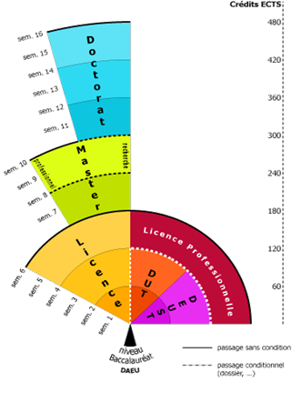

Les bonnes réponses sont :

Un DUT
Un DEUST
Une Licence
Une Licence Professionnelle
Un Master
Un Doctorat
Après le Bac, à l’université, je peux :
- choisir des études professionnalisées en 2 ans (DUT ou DEUST)
- choisir des études plus générales en 3 ans (Licence)
Je pourrai ensuite, selon mon projet, poursuivre mes études vers une Licence Professionnelle, un Master ou un Doctorat.
L'Université d'Artois propose plus de 150 formations de bac + 1 à bac + 8, organisées selon le schéma européen LMD Licence Master Doctorat.
Les BTS, quant à eux, sont dispensés dans les lycées.
Vous pouvez retrouver toutes les formations proposées à l’université d’Artois en consultant:
- Notre catalogue des formation
- Ou alors cliquant directement sur un domaine de formation
Sciences, Technologies, Santé (70)(en savoir plus)
Arts, Lettres, Langues (27) (en savoir plus)
Droit, Economie, Gestion (37) (en savoir plus)
Sciences Humaines et Sociales (17) (en savoir plus)